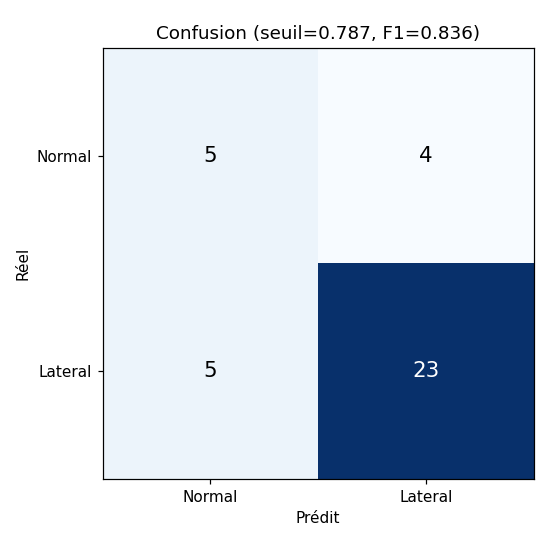
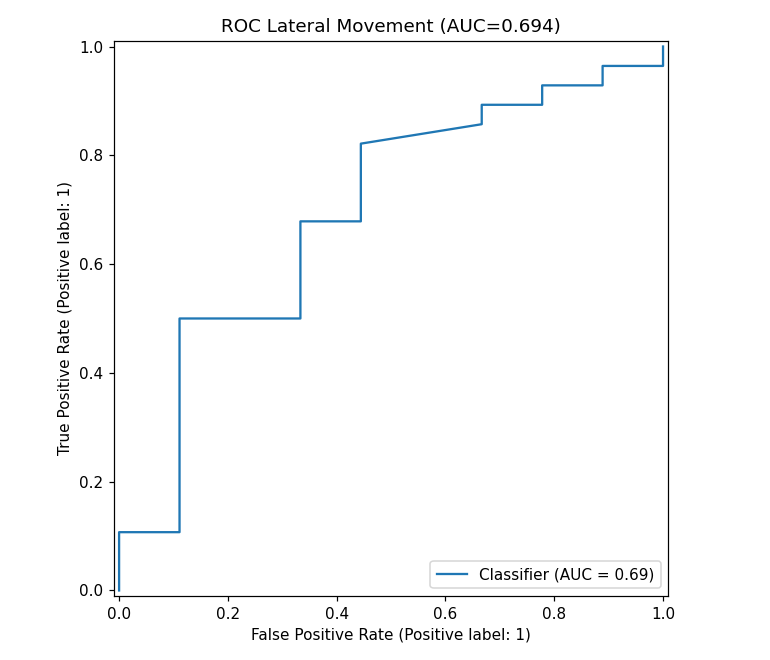
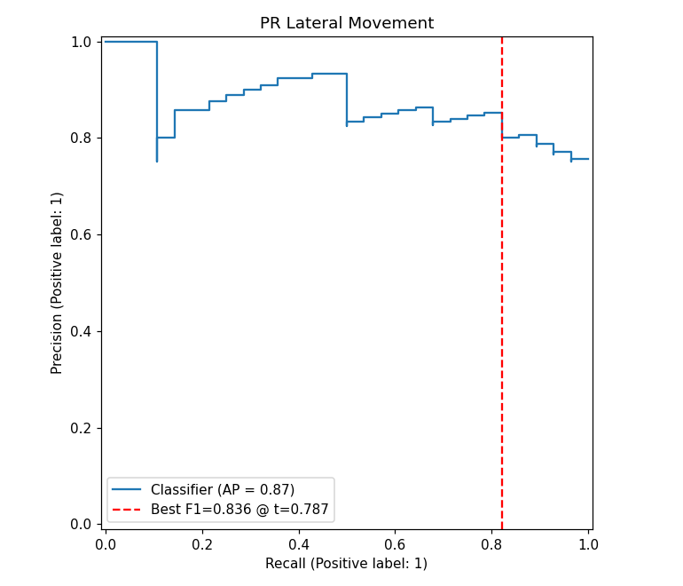
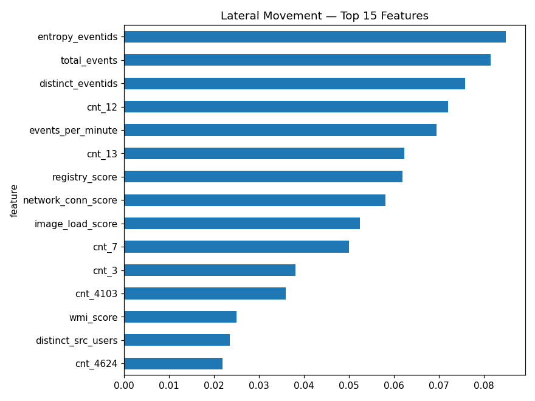
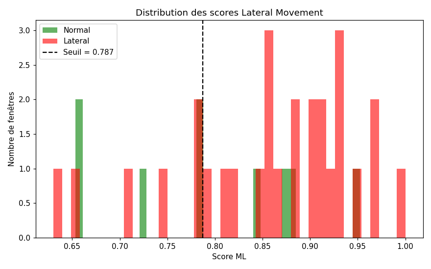
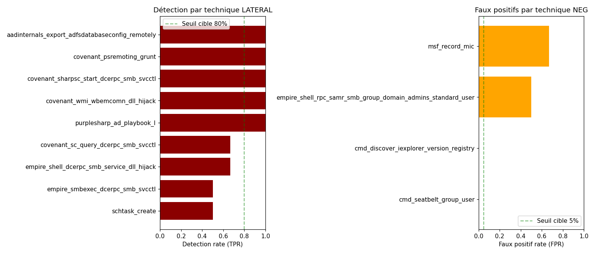

Modèle entraîné sur Atomic Red Team, split GroupShuffleSplit par technique.
Seuil calibré : 0.787
{
"version": 1,
"f1_default": 0.8615384615384616,
"f1_calibrated": 0.8363636363636363,
"best_threshold": 0.787217553688142,
"roc_auc": 0.6944444444444444,
"f1_cv_mean": 0.9187389162561577,
"f1_cv_std": 0.02788838021602893,
"top_feature": "entropy_eventids",
"top_feature_importance": 0.08487841316929262,
"leakage_warning": false
}






technique type n detection_rate score_mean
msf_record_mic NEGATIVE 3 0.666667 0.859290
empire_shell_rpc_samr_smb_group_domain_admins_standard_user NEGATIVE 4 0.500000 0.798205
cmd_discover_iexplorer_version_registry NEGATIVE 1 0.000000 0.653419
cmd_seatbelt_group_user NEGATIVE 1 0.000000 0.721111
aadinternals_export_adfsdatabaseconfig_remotely POSITIVE 1 1.000000 0.900000
covenant_psremoting_grunt POSITIVE 5 1.000000 0.910000
covenant_sharpsc_start_dcerpc_smb_svcctl POSITIVE 3 1.000000 0.857386
covenant_wmi_wbemcomn_dll_hijack POSITIVE 3 1.000000 0.891046
purplesharp_ad_playbook_I POSITIVE 4 1.000000 0.893618
covenant_sc_query_dcerpc_smb_svcctl POSITIVE 3 0.666667 0.746005
empire_shell_dcerpc_smb_service_dll_hijack POSITIVE 3 0.666667 0.835839
empire_smbexec_dcerpc_smb_svcctl POSITIVE 4 0.500000 0.820465
schtask_create POSITIVE 2 0.500000 0.858333